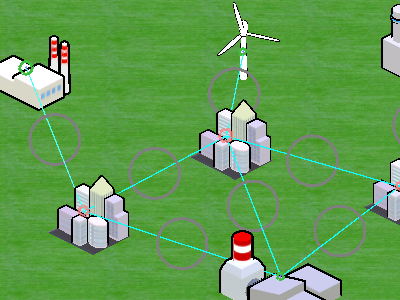

Projects
This is a list of projects that I have worked on, in and out of school. Each description details the technical challenges of the project and the skills I gained from each one.
Griddle - UC Berkeley Social Apps Lab
Position: Part-time programmer for an in-development educational game about the power grid. The game is being developed using Unity3D.
Skills: Unity3D, C#, Agile development
Description: Griddle is an in-development educational game which will be used to educate high-school and college students about how the power grid works, and about the challenges and benefits of renewable vs. conventional energy. It covers concepts from system design to generation scheduling, all the way down to responding to day-to-day challenges and crises. I worked on this project for about 8 hours a week for 3 semesters, and part-time during the summer of 2014. The game has been used to teach several lessons at Berkeley High School, and I helped at a few of these.